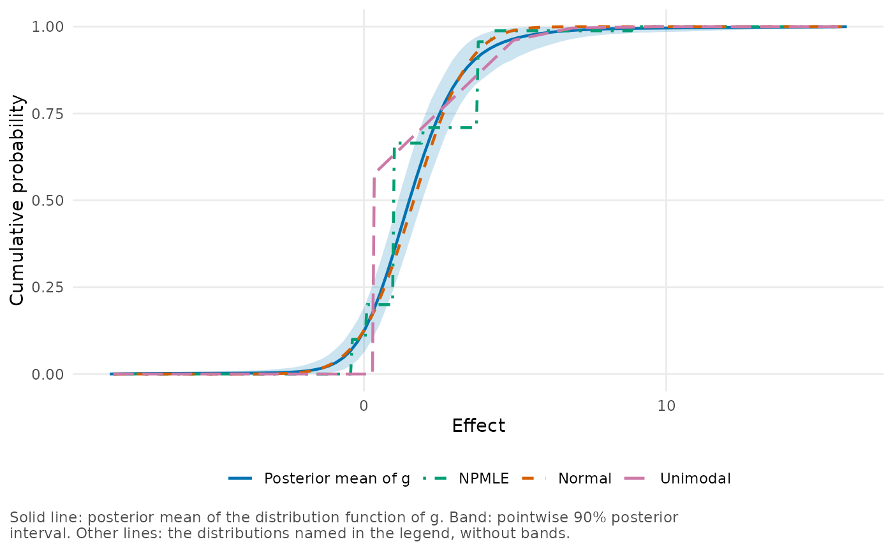

bayesEfron and empirical Bayes methods compared
Source:vignettes/empirical-bayes.Rmd
empirical-bayes.RmdIn this vignette we compare bayesEfron with the empirical Bayes
methods in the ebnm package (Willwerscheid et al. 2025). We
apply both to the same data: the 97 callback gaps of
vignette("bayesEfron"), the 1,500 simulated sites of
vignette("twin-towers"), and further simulated data sets,
from which we estimate coverage.
Empirical Bayes is the most common way to shrink estimates that come with standard errors (Robbins 1956). It works in two steps. First it estimates the distribution of the true effects, \(g\), from all the estimates. Then it treats that estimate, \(\hat g\), as if it were the truth, and computes the posterior distribution of each effect under it. An estimate used in this way is called a plug-in estimate. bayesEfron starts from the same sampling model and the same idea, but differs in the second step. It gives \(g\) a prior distribution, obtains a posterior distribution for it, and averages the posterior distribution of each effect over that uncertainty (Lee and Sui 2025). We want to see how much this changes the results, and what else differs between the methods.
Setup
We ran the comparison in advance, with the script
data-raw/ebnm-comparison.R in the source repository, and
stored its results in the package, so you don’t need ebnm to follow this
vignette. After loading bayesEfron we read the stored results and take
out the four tables of results.
library(bayesEfron)
stored <- readRDS(system.file("examples", "ebnm_comparison.rds",
package = "bayesEfron"))
krw <- stored$krw$table # callback gaps
twin <- stored$twin$table # simulated sites
panels <- stored$panels$table # simulated data sets, unequal standard errors
equal <- stored$equal_se$repeated # simulated data sets, equal standard errorsTwo small functions format the numbers in the tables:
num() sets the number of decimals, and
with_se() puts a standard error in parentheses after its
value.
A plug-in version of a bayesEfron fit
For a bayesEfron fit we can separate the two steps by using the
posterior mean of \(g\) as a plug-in
estimate. as_normalmix() returns that posterior mean in the
form that ebnm uses for a prior distribution. We apply it to
krw_fit, the fit of the 97 callback gaps from
vignette("bayesEfron").
g_hat <- as_normalmix(krw_fit)
class(g_hat)
#> [1] "normalmix"
str(unclass(g_hat)[c("pi", "mean", "sd")], give.attr = FALSE)
#> List of 3
#> $ pi : num [1:101] 0.00044 0.000308 0.000227 0.000174 0.000138 ...
#> $ mean: num [1:101] -0.0829 -0.0805 -0.0781 -0.0757 -0.0732 ...
#> $ sd : num [1:101] 0 0 0 0 0 0 0 0 0 0 ...As the output shows, the result is a mixture of point masses at the
101 grid points (mean), with their probabilities in
pi. If we pass it to ebnm with fix_g = TRUE,
ebnm computes the posterior distributions of the effects as if this one
\(g\) were the truth. The call needs
ebnm and is not run here.
plugged <- ebnm::ebnm_npmle(krw_discrimination$yi, krw_discrimination$sei,
g_init = g_hat, fix_g = TRUE)In the tables below, the rows labeled “g of bayesEfron, plugged in” are fits of this kind. They use the same \(g\) as the rows labeled “bayesEfron” but leave out its uncertainty. Their means and standard deviations come from ebnm, and their intervals are computed from that \(g\) in the way that bayesEfron computes its own, so the two rows differ only by the uncertainty about \(g\).
Methods and settings
All the methods are listed with their calls in
stored$settings. In the calls, x and
s are the estimates and their standard errors.
| Method | Call |
|---|---|
| No shrinkage | ebnm_flat(x, s) |
| Normal | ebnm_normal(x, s, mode = “estimate”) |
| Scale mixture of normals | ebnm_normal_scale_mixture(x, s, mode = “estimate”) |
| ash | ebnm_ash(x, s, mode = “estimate”, mixcompdist = “normal”, prior = “uniform”) |
| Unimodal | ebnm_unimodal(x, s, mode = “estimate”) |
| NPMLE | ebnm_npmle(x, s) |
| Known g | ebnm_npmle(x, s, g_init = |
| g of bayesEfron, plugged in | ebnm_npmle(x, s, g_init = as_normalmix(fit), fix_g = TRUE) |
| bayesEfron | bayes_efron_fit() |
| bayesEfron, range from the true effects | bayes_efron_fit(grid_method = “paper_simulation”, theta_true = , M = 8) |
| Efron’s estimator | deconvolveR::deconv(tau, P, Q, y = 1, family = “Binomial”, c0 = 1) |
The first six rows are ebnm prior families: no shrinkage, a normal distribution, a scale mixture of normals, the adaptive shrinkage (ash) prior from the ashr package, a unimodal distribution, and the nonparametric maximum likelihood estimate (NPMLE) (Kiefer and Wolfowitz 1956). We explain the other rows where they are used.
Three choices make the fits comparable.
- We estimate the location of each prior family
(
mode = "estimate"), because by default ebnm centers the prior at zero. - Every interval is an equal-tailed 90% interval. For ebnm we take the
5% and 95% sample quantiles of 4,000 draws from each posterior
distribution, because its
confint()method returns a highest density interval. - We give the ash prior normal components and fit it without the penalty that ashr puts on its weights by default.
Efron’s estimator, in the last row, appears only in the last table of
results. The ebnm function for it, ebnm_deconvolver(),
calls the deconvolveR package (Narasimhan and Efron 2020) and
takes z-scores and no standard errors. When the standard errors differ,
a fit to the z-scores estimates the distribution of the effects divided
by their standard errors, which is a different quantity. So we compare
this estimator on data whose standard errors are all equal.
An empirical Bayes fit of these data takes a fraction of a second. By comparison, the bayesEfron fits took 1.2 seconds for the 97 firms and 37 seconds for the 1,500 simulated sites, including the pilot fit that sets the range of the grid. We do not show these times again in the tables below.
Callback gaps at 97 firms
We do not know the true gaps, so we compare each method with the
bayesEfron fit, krw_fit. Below we round the columns of
krw that make this comparison and print them.
shown <- data.frame(
method = krw$method, correlation = krw$correlation,
largest_difference = krw$largest_difference_in_se, sd_ratio = krw$sd_ratio,
length_ratio = krw$length_ratio, log_likelihood = krw$loglik
)
shown[2:5] <- round(shown[2:5], 3)
shown$log_likelihood <- round(shown$log_likelihood, 1)
knitr::kable(shown, col.names = c("Method", "Correlation of posterior means",
"Largest difference (standard errors)",
"Ratio of posterior SD", "Ratio of interval length",
"Log likelihood"))| Method | Correlation of posterior means | Largest difference (standard errors) | Ratio of posterior SD | Ratio of interval length | Log likelihood |
|---|---|---|---|---|---|
| No shrinkage | 0.958 | 1.662 | 1.487 | 1.493 | NA |
| Normal | 0.977 | 1.009 | 0.932 | 0.936 | 229.1 |
| Scale mixture of normals | 0.982 | 0.817 | 0.963 | 0.966 | 228.9 |
| ash | 0.976 | 1.061 | 0.917 | 0.920 | 229.1 |
| Unimodal | 0.951 | 1.457 | 0.984 | 0.880 | 229.6 |
| NPMLE | 0.984 | 0.527 | 0.979 | 0.872 | 231.4 |
| g of bayesEfron, plugged in | 0.999 | 0.330 | 0.996 | 0.996 | 229.6 |
| bayesEfron | 1.000 | 0.000 | 1.000 | 1.000 | NA |
For each method the table has:
- the correlation of its posterior means with the bayesEfron posterior means;
- the largest difference between the two, in units of the firm’s standard error;
- its mean posterior standard deviation, as a ratio to the bayesEfron value;
- the mean length of its 90% intervals, also as a ratio to the bayesEfron value;
- the marginal log likelihood of the 97 estimates under its estimate of \(g\).
A ratio below 1 means smaller than bayesEfron.
Across methods the posterior means agree closely. Every correlation is above 0.95, and among the six ebnm prior families the NPMLE is the closest, at 0.984. The intervals differ more. The NPMLE intervals are 13% shorter than the bayesEfron intervals, and the normal fit’s intervals are 6% shorter.
This difference does not come from the uncertainty about \(g\), as the plug-in row shows. Leaving that uncertainty out makes the bayesEfron intervals only 0.4% shorter. For these data, the shape of the estimated \(g\) matters far more for the intervals than the uncertainty about it.
The NPMLE has the largest log likelihood, as it must among distributions on its grid. All the others, including the \(g\) of bayesEfron in the plug-in row, are within one unit of each other.
To compare the estimates of \(g\)
themselves we plot them as distribution functions, which can be compared
between a smooth estimate and a discrete one. We take the distribution
functions of three ebnm estimates from stored$krw$cdf and
pass them to plot_g() in its compare argument,
with the gaps in percentage points (scale = 100).
curves <- stored$krw$cdf
others <- lapply(c(NPMLE = "NPMLE", Normal = "Normal", Unimodal = "Unimodal"),
function(method) curves[curves$method == method, c("x", "cdf")])
plot_g(krw_fit, type = "cdf", compare = others, scale = 100)
Only the bayesEfron estimate has a band. The NPMLE is a step function with a few jumps, which is the form that an NPMLE takes, and the unimodal estimate has a large jump at its mode. Between their jumps these two curves leave the band, by up to 0.21 and 0.31 in probability, as a discrete estimate must when it is compared with a smooth one. By contrast, the normal curve stays within the band, to within 0.0002 in probability. On this evidence, the data do not exclude a normal distribution of the gaps.
The methods also largely agree on which firms are at the top. If we
list the 10 firms with the largest posterior means for each of the 8
rows (stored$krw$firms), we get 14 firms in all, and 5 of
them are in every list.
Simulated sites with known effects
The true effects of the 1,500 simulated sites are known and lie in
two groups, so here we can judge each fit against the truth. We print
four measures from twin.
shown <- data.frame(
method = twin$method, rmse = round(twin$rmse, 3),
inside = with_se(twin$inclusion, twin$inclusion_se),
length = round(twin$mean_length, 2), w1 = round(twin$w1, 3)
)
knitr::kable(shown, col.names = c("Method", "RMSE of posterior means",
"Proportion inside 90% interval (SE)", "Mean length",
"Distance of the estimate of g"),
align = "lrrrr")| Method | RMSE of posterior means | Proportion inside 90% interval (SE) | Mean length | Distance of the estimate of g |
|---|---|---|---|---|
| No shrinkage | 0.966 | 0.887 (0.008) | 2.62 | NA |
| Normal | 0.730 | 0.888 (0.008) | 2.09 | 0.444 |
| Scale mixture of normals | 0.730 | 0.879 (0.008) | 2.03 | 0.458 |
| ash | 0.730 | 0.883 (0.008) | 2.07 | 0.443 |
| Unimodal | 0.699 | 0.911 (0.007) | 1.89 | 0.213 |
| NPMLE | 0.688 | 0.775 (0.011) | 1.60 | 0.141 |
| Known g | 0.686 | 0.891 (0.008) | 1.68 | 0.000 |
| g of bayesEfron, plugged in | 0.688 | 0.897 (0.008) | 1.76 | 0.062 |
| bayesEfron | 0.688 | 0.899 (0.008) | 1.76 | 0.062 |
| bayesEfron, range from the true effects | 0.687 | 0.908 (0.007) | 1.77 | 0.056 |
The first measure is the root mean squared error (RMSE) of the
posterior means. The second is the proportion of the true effects inside
the 90% intervals, with its standard error (inclusion and
inclusion_se in the stored tables). The third is the mean
length of those intervals, and the fourth is the Wasserstein distance
between the estimate of \(g\) and the
true effects, which is the area between their two distribution functions
in the units of the effects. The row “Known g” uses the true
distribution itself and shows what is attainable, and the last row takes
the range of its grid from the true effects.
The methods fall into groups. The normal fit, the scale mixture and the ash fit have an RMSE near 0.73, because they shrink toward one center and the effects have two. The unimodal fit does somewhat better, at 0.70. Both the NPMLE and bayesEfron reach 0.688, close to the 0.686 of the true distribution. They differ in their intervals, however: the NPMLE intervals contain 77% of the true effects and the bayesEfron intervals 90%.
Ignoring the uncertainty about \(g\) does not explain why the NPMLE intervals are too short. The true distribution itself, taken as known, gives intervals that contain 89% of the true effects, and the plug-in \(g\) of bayesEfron gives 90%. We think the reason is the form of the estimate. The NPMLE of \(g\) is a handful of point masses, and the posterior distribution of a site under it is concentrated on those points. By contrast, the bayesEfron estimate is smooth, and among the estimates that use only the data it is the closest to the true effects.
Coverage over simulated data sets
From one data set we learn little about coverage, which is the
proportion of true effects inside the intervals averaged over many data
sets. So we repeated the comparison on independent simulated data sets
from the same design, each with its own true effects: 20 with 1,500
sites and 100 with 100 sites. In the next table we print the means over
these data sets, from panels, with their Monte Carlo
standard errors.
shown <- data.frame(
sites = panels$K, method = panels$method,
rmse = with_se(panels$rmse, panels$rmse_se),
inside = with_se(panels$inclusion, panels$inclusion_se),
length = with_se(panels$mean_length, panels$mean_length_se)
)
knitr::kable(shown, col.names = c("Sites", "Method", "RMSE (SE)",
"Coverage of 90% intervals (SE)", "Mean length (SE)"),
align = "rlrrr")| Sites | Method | RMSE (SE) | Coverage of 90% intervals (SE) | Mean length (SE) |
|---|---|---|---|---|
| 100 | bayesEfron | 0.681 (0.007) | 0.901 (0.004) | 1.960 (0.017) |
| 100 | g of bayesEfron, plugged in | 0.684 (0.007) | 0.898 (0.004) | 1.952 (0.017) |
| 100 | Normal | 0.706 (0.005) | 0.898 (0.003) | 2.085 (0.005) |
| 100 | NPMLE | 0.666 (0.007) | 0.655 (0.008) | 1.448 (0.014) |
| 1500 | bayesEfron | 0.649 (0.005) | 0.900 (0.003) | 1.742 (0.007) |
| 1500 | g of bayesEfron, plugged in | 0.649 (0.005) | 0.899 (0.003) | 1.741 (0.007) |
| 1500 | Normal | 0.702 (0.004) | 0.902 (0.002) | 2.089 (0.002) |
| 1500 | NPMLE | 0.647 (0.005) | 0.780 (0.009) | 1.575 (0.009) |
At both sizes the bayesEfron intervals have coverage close to 0.90: 0.901 with 100 sites and 0.900 with 1,500. For the NPMLE the coverage is 0.66 and 0.78.
Again the uncertainty about \(g\)
adds little to the site intervals. The bayesEfron intervals are 0.4%
longer than the plug-in intervals with 100 sites and 0.06% longer with
1,500. We might have expected more with only 100 sites, which leave
\(g\) quite uncertain. But most of the
posterior uncertainty about a single effect comes from its own standard
error, and the part that comes from \(g\) is small in comparison. For your own
fit, site_summary() returns the two parts for every site in
the columns sd_given_g and sd_about_g.
In accuracy the NPMLE is slightly ahead. Its posterior means have an RMSE that is lower than the bayesEfron RMSE by 2.2% with 100 sites and by 0.3% with 1,500. The normal fit has a single center, which does not suit these effects, but its intervals still have coverage close to 0.90. It pays in accuracy and in length: with 1,500 sites its intervals are 20% longer than the bayesEfron intervals.
Equal standard errors and Efron’s estimator
bayesEfron is the Bayesian form of the estimator of Efron (2016), and
the two can be compared directly when the standard errors are equal. We
first added an error with standard deviation 1 to each true effect of
the 20 data sets with 1,500 sites. We then fitted the model and ran
deconvolveR::deconv() on the grid of that fit, with the
same number of spline functions and with the likelihood of the estimates
themselves, not of their counts in intervals. Finally we computed the
posterior distributions of the sites under the deconv()
estimate of \(g\). We added these 20
data sets after we had seen the result for one such data set. Their
means are in equal, which we print next.
shown <- data.frame(
functions = equal$M, method = equal$method,
rmse = with_se(equal$rmse, equal$rmse_se),
inside = with_se(equal$inclusion, equal$inclusion_se),
length = with_se(equal$mean_length, equal$mean_length_se, 2)
)
knitr::kable(shown, col.names = c("Spline functions", "Method", "RMSE (SE)",
"Coverage of 90% intervals (SE)", "Mean length (SE)"),
align = "rlrrr")| Spline functions | Method | RMSE (SE) | Coverage of 90% intervals (SE) | Mean length (SE) |
|---|---|---|---|---|
| 6 | bayesEfron | 0.747 (0.005) | 0.876 (0.007) | 2.19 (0.03) |
| 6 | g of bayesEfron, plugged in | 0.747 (0.005) | 0.875 (0.007) | 2.18 (0.03) |
| 6 | Efron’s estimator | 0.752 (0.005) | 0.910 (0.003) | 2.39 (0.01) |
| 8 | bayesEfron | 0.746 (0.005) | 0.878 (0.009) | 2.19 (0.03) |
| 8 | g of bayesEfron, plugged in | 0.746 (0.005) | 0.877 (0.009) | 2.18 (0.03) |
| 8 | Efron’s estimator | 0.749 (0.005) | 0.900 (0.004) | 2.32 (0.02) |
As before, the point estimates are nearly the same. Here the bayesEfron intervals are the shorter ones, and their coverage falls short of 90%: 87.6% with 6 spline functions and 87.8% with 8, against 91.0% and 90.0% for Efron’s estimator. All of these fits converged, so this is a property of the estimates and not of the sampler.
We have an explanation, but we have not tested it on its own. With
every standard error equal to 1, no site is precise enough to show the
shape of \(g\) within a group. In the
one such data set for which we kept both estimates of \(g\) (stored$equal_se$g), the
posterior mean of \(g\) is more peaked
than the estimate that deconv() regularizes with its
penalty, and a more peaked \(g\) gives
narrower posterior distributions for the sites.
We saw the lower coverage for one distribution of true effects, flat within two groups, and for one size of error, so we do not know how far it extends. The data sets with unequal standard errors from the same distribution show no shortfall. Even so, you should not rely on the 90% site intervals to have 90% coverage in every configuration, and data in which no site is estimated precisely call for caution.
Summary
If the posterior means of the sites are all you need, it matters little whether you use a flexible empirical Bayes fit or bayesEfron, and an empirical Bayes fit takes a fraction of a second. These results give no reason to prefer the slower method for that purpose.
The methods differ in their estimates of the distribution of effects and in the uncertainty that they attach to each effect. A normal prior is adequate when the effects are roughly normal and misses the shape when they are not. An NPMLE follows the shape with a few point masses, which do well for means and poorly for intervals. bayesEfron gives a smooth estimate of \(g\), with a band that shows how much of its shape the data determine, and site intervals that had coverage close to 0.90 in the simulated data sets with unequal standard errors.
What set bayesEfron apart in these comparisons was the smoothness of its estimate of \(g\). Its intervals also average over the uncertainty about \(g\), which is part of the model, but the averaging changed them by less than 1%.